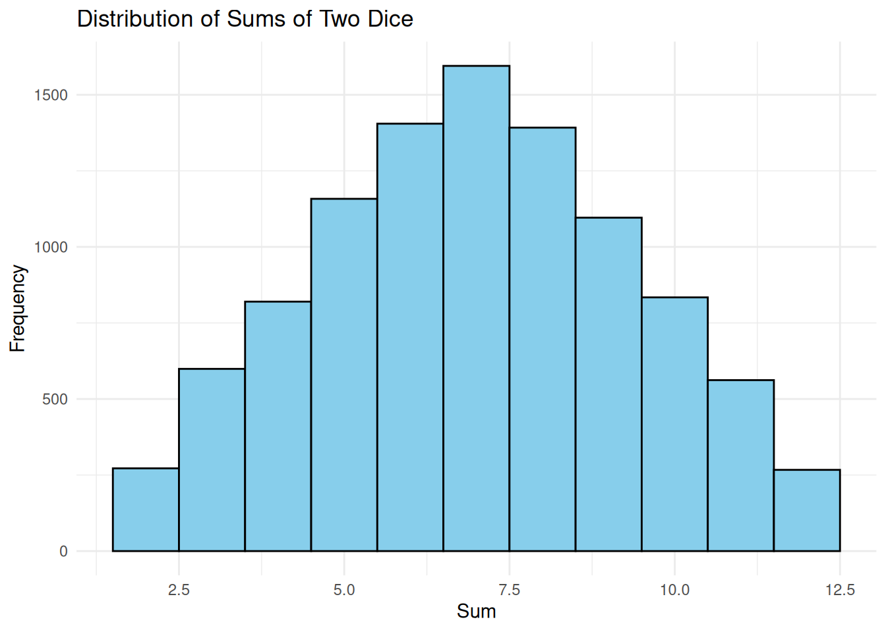

# Function to roll two dice and sum their outcomes
roll_dice <- function() {
sum(sample(1:6, size = 2, replace = TRUE))
}
# Simulate 10,000 rolls
set.seed(123)
dice_rolls <- replicate(10000, roll_dice())
# Visualize the results
library(ggplot2)
dice_data <- data.frame(Sum = dice_rolls)
ggplot(data = dice_data, aes(x = Sum)) +
geom_histogram(binwidth = 1, fill = "skyblue", color = "black") +
labs(
title = "Distribution of Sums of Two Dice",
x = "Sum",
y = "Frequency"
) +
theme_minimal()